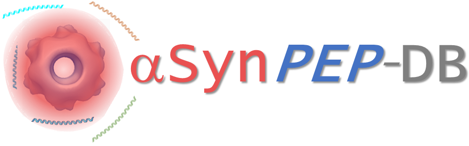
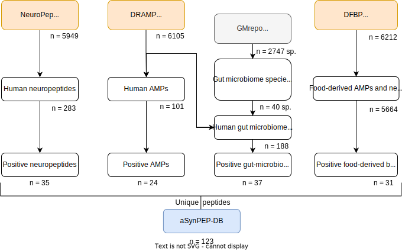

Welcome to the 
A repository of human candidate endogenous peptides for inhibiting the aggregation of alpha-synuclein toxic species. Learn more about it in our online manual.
Video tutorial
Contact
For comments and bugs please address Carlos Pintado-Grima.
For general questions about the research, please contact Salvador Ventura.
Acknowledgements
This work is supported by the Spanish Ministry of Science and Innovation (PID2019– 105017RB-I00).
Frequently asked questions (FAQs)
How are the peptides obtained?
aSynPEP-DB is built from peptides which could be inherently interacting with α-Synuclein aggregated species in human populations. α-Synuclein aggregates are found in the brain of Parkinson’s Disease patients in the form of Lewy bodies [9278044]. Recent studies suggest the initial amyloid conversion could be traced to the gastointestinal tract and transmitted to the brain [31255487].
The aSynPEP-DB considers three independent peptide source datasets: human neuropeptides, gut-microbiome peptides from healthy humans and human antimicrobial peptides. αSynPEP-DB rationalises that human peptides which prevent this pathogenic aggregation would be expressed in the nervous system. Besides, gut-microbiota is known to alter human physiology through the gut-brain axis [31460832]. Growing preclinical evidence shows gut α-Synuclein can be transported to the brain via the vagus nerve [31255487] and that the modulation of α-Synuclein by bacterial components such as LPS [31460832] or extracellular peptides such as PSMα3 can modulate its aggregation [34145261]. Furthermore, we recently showed that the human anti-microbial peptide LL-37 targetted α-Synuclein toxic oligomers with nanomolar affinity [34145261]. All together, aSynPEP exploits datasets of peptides that could be present in the human brain or gut where aSyn aggregates occur in disease.
The knowledge obtained from PSMa3 and LL-37 allowed us to identify three physicochemical properties required for inhibition of aggregation: amphipaticyty, alpha-helical content and positive net charge [34145261]. This allowed us to screen peptide candidates from the three datasets of endogenous peptides with the potential to bind and inhibit α-Synuclein aggregation (Figure 1).

Figure 1. The curation scheme shown above describes the bioinformatics pipeline developed starting with 5949 neuropeptides from NeuroPep [25931458], 6105 AMPs and 2747 gut-microbiome peptides provided by DRAMP [34390348]. Gut-microbiome species from GMrepo were considered when their abundance was >= 5% in healthy humans healthy [34788838]. Peptides were evauated on heuristic rules reflecting the experimentally reported requirements for amphipaticyty, alpha-helical propensity and overall positive charge. Positive peptides were linked to external databases and enriched with therapeutic-relevant information. Finally, positive peptides from different datasets were merged into aSynPEP-DB, rendering a total of 95 peptides with potential to inhibit pathogenic α-Synuclein aggregation.
Are the listed peptides experimentally validated?
Our previous research identified amphipaticyty, alpha-helical content and positive net charge as the three key physicochemical propierties peptides need to have for high affinity binding to pathogenic oligomeric species of α-Synunclein. This identification allowed us to design two groups of synthtic peptides: those which met the aforementioned properties thus retaining their ability to bind and inhibit aggregation and those who did not. With this knowledge we develop αSynPEP-DB, a repository of endogenous peptides meeting such physicochemical requirements.
Except the already mentioned LL-37, the peptides listed in the database are not experiemntally validated. We envision the aSynPEP-DB as a resource for researchers to identify and validate bioactive peptides that have the potential to inhibit α-Synuclein aggregation thus building a new therapeutic/diagnostic paradigm in different synucleopathies. Additionally, identifying human endogenous molecules that interact with aSyn aggregates may define new targets or biomarkers to monitor in patients.
Is it possible to screen other peptides not considered by aSynPEP-DB?
αSynPEP-DB provides information on peptides from human proteins and healthy human microbacterial populations under the premise that either these would have co-evolved to avoid or reduce toxic aggregated species of α-Synuclein in humans. To evaluate synthetic peptides or others not considered in the proposed pipeline, αSynPEP-DB provides a discriminative algorithm which screens for the three experimentally validated physicochemical properties identified for inhibitory peptides. This algorithm can be accessed in the Algorithm tab.